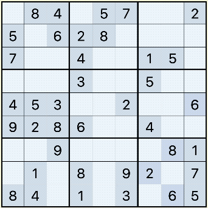

Sudoku (数独) is a logic-based, combinatorial number-placement puzzle. In classic Sudoku, the objective is to fill a 9×9 grid with digits so that each column, each row, and each of the nine 3×3 subgrids that compose the grid (also called "boxes", "blocks", or "regions") contains all of the digits from 1 to 9. The puzzle setter provides a partially completed grid, which, for a well-posed puzzle, has a single solution. (Source)

Quick Demo
You can use hints in this game. A hint will shows the cell with the least amount of possible numbers. Pressing it again will reveal the cell.
You can also pause the game. Pausing the game will hide the sudoku grid and disable all inputs and hints.
Touch controls are not supported.
Reloading the page resets the puzzle. A warning will pop up if the puzzle has already started.
(For Random, a random number of clues are generated)